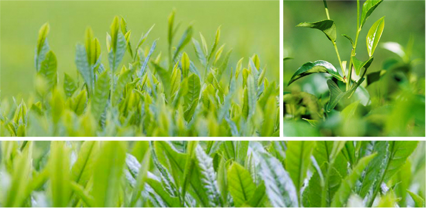

功能列表
选择你所有需要的功能
系统介绍
SYSTEM INTRODUCTION
欢迎使用诊断系统！请从左侧列表选择使用功能，点击继续
本系统已收录了多种茶树病毒和茶树病害的详细资料，包括县管专家的最新研究成果在传统的茶树病虫害防治技术资料的基础上应用计算机数据库技术和网络技术，构建了基于internet的”茶树病虫害诊断与防治专家系统“，实现了茶树病害与虫害的诊断、查询浏览、自助诊断等功能，应用此系统，可以方便、快捷的对发生的茶树病、虫害进行诊断鉴别，了解他们的发生规律，以及防控途径和方法，以后如有新的茶树病虫发现，我们将及时添加到系统中。
